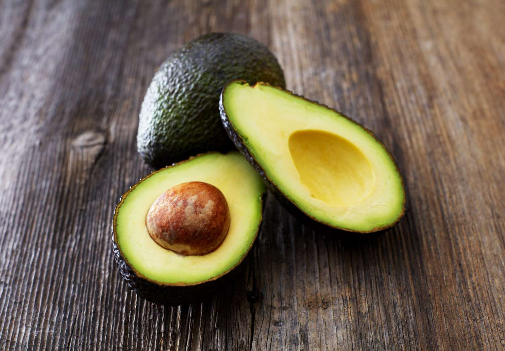

- Apples
-
Apples make a quick and easy addition to the diet.
Eat them with the skin on for the greatest health benefits.
Apples are high-fiber fruits, meaning that eating them could
boost heart health and promote weight loss. The pectin in apples
helps to maintain good gut health.Research has shown that there
is a link between eating apples regularly and a lower risk of
cardiovascular disease, certain cancers, and diabetes.Apples also
high levels of quercetin, which may have anti-cancer properties.
Nutritions of an Apple
- 95 calories
- 25.13 g of carbohydrate
- 4.4 g of fiber
- 195 mg of potassium
- 11 mg calcium
| Fruit |
Improved health conditons |
| Apple |
Cancer |
| Heartdiseases |
| Diabetes |
- Bananas
-
Bananas are well known for their high potassium content. A medium banana containsTrusted Source 422 mg of the adequate adult intakeTrusted Source of 4,500 mg of potassium. Potassium helps the body control heart rate and blood pressure.
Bananas are also a good source of energy, with one banana containing 105 calories and 26.95 g of carbohydrate.
The 3.1 g of fiber in a regular banana can also help with regular bowel movements and stomach issues, such as ulcers and colitis.
Nutritions of a Banana
- 1.29 g protein
- 6 mg calcium
- 32 mg magnesium
- 10.3 mg vitamin C
- 3.1 gm fibre
| Fruit |
Improved health conditons |
| Banana |
Asthama |
| Heartdiseases |
| Digestive Health |

- Avacados
-
Avocados are rich in oleic acid, a monounsaturated fat which helps lower cholesterol levels. The American Heart Association say thatTrusted Source maintaining healthy cholesterol levels with healthful fats could reduce the risk of heart disease and stroke.
Like bananas, avocados are rich in potassium. They also contain lutein, an antioxidant which is important for healthy eyes and skin.they are also known as an alligator pear or butter fruit, avocados are actually a type of berry. They grow in warm climates.
Nutritions of an Avacado
- 2.01 g protein
- 12 mg calcium
- 29 mg magnesium
- 10.1 mg vitamin C
- 6.7 gm fibre
| Fruit |
Improved health conditons |
| Avacados |
Great for vision |
| Heartdiseases |
| cancer |